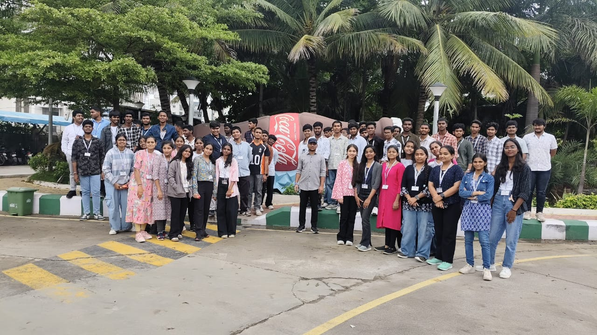

Out Reach
Bsnl Industrial Vist
Review:
Out Reach
Bsnl Industrial Vist
Review:
Out Reach
Bsnl Industrial Vist
Review:
The Industrial Visit to the Coca-Cola factory was an informative and enriching experience for all of us. At the beginning of the visit,
the factory representatives gave us a basic introduction about the Coca-Cola company, its history, and its manufacturing processes. They explained how the factory
operates and highlighted the importance of quality control and safety standards followed during production.

After the introductory session, we were taken on a guided tour of the factory. We explored each section of the factory, where the officials explained every step
involved in the preparation and bottling process of the beverages, starting from raw material handling to final packaging. Each process was demonstrated clearly, and we
were allowed to examine the machinery and production flow closely.
 The visit was highly interactive, as we had the opportunity to ask questions and clarify our doubts at every stage. The staff members patiently explained all the processes
and ensured we understood them well. Throughout the visit, our class teacher, Mr. Naveen, guided the group efficiently and maintained discipline, making the visit smooth and
well-organized.
The visit was highly interactive, as we had the opportunity to ask questions and clarify our doubts at every stage. The staff members patiently explained all the processes
and ensured we understood them well. Throughout the visit, our class teacher, Mr. Naveen, guided the group efficiently and maintained discipline, making the visit smooth and
well-organized.
 Overall, the industrial visit was a valuable learning experience that helped us gain practical knowledge and a deeper understanding of industrial operations.
Overall, the industrial visit was a valuable learning experience that helped us gain practical knowledge and a deeper understanding of industrial operations.